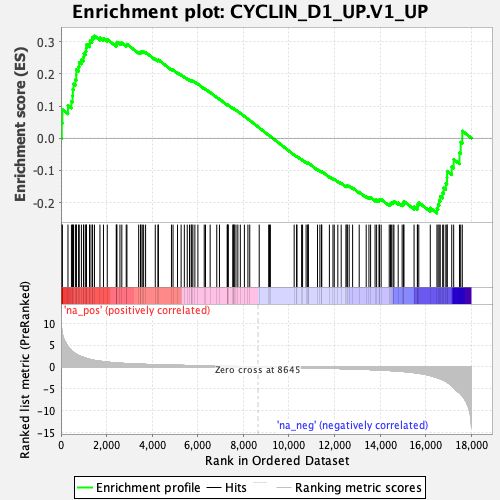

| | | Dataset | DE_genes2 |
| Phenotype | NoPhenotypeAvailable |
| Upregulated in class | na_pos |
| GeneSet | CYCLIN_D1_UP.V1_UP |
| Enrichment Score (ES) | 0.31788334 |
| Normalized Enrichment Score (NES) | 1.1010025 |
| Nominal p-value | 0.21311475 |
| FDR q-value | 0.5191642 |
| FWER p-Value | 0.996 |
Table: GSEA Results Summary

Fig 1: Enrichment plot: CYCLIN_D1_UP.V1_UP
Profile of the Running ES Score & Positions of GeneSet Members on the Rank Ordered List
| SYMBOL | RANK IN GENE LIST | RANK METRIC SCORE | RUNNING ES | CORE ENRICHMENT | | 1 | KIR2DL3 | 34 | 8.430 | 0.0471 | Yes |
| 2 | ADRA2A | 60 | 7.450 | 0.0890 | Yes |
| 3 | MSLN | 306 | 4.599 | 0.1020 | Yes |
| 4 | NSG1 | 458 | 3.654 | 0.1148 | Yes |
| 5 | FAM189A2 | 509 | 3.442 | 0.1320 | Yes |
| 6 | MALL | 518 | 3.411 | 0.1514 | Yes |
| 7 | SYN1 | 549 | 3.286 | 0.1688 | Yes |
| 8 | RASSF7 | 631 | 2.993 | 0.1817 | Yes |
| 9 | HRC | 669 | 2.881 | 0.1964 | Yes |
| 10 | NFE2 | 671 | 2.874 | 0.2130 | Yes |
| 11 | RASGRF1 | 772 | 2.586 | 0.2225 | Yes |
| 12 | RPS6KA1 | 799 | 2.522 | 0.2357 | Yes |
| 13 | PTS | 895 | 2.328 | 0.2439 | Yes |
| 14 | SELPLG | 987 | 2.172 | 0.2514 | Yes |
| 15 | MMP15 | 1000 | 2.142 | 0.2632 | Yes |
| 16 | KLF4 | 1085 | 1.986 | 0.2701 | Yes |
| 17 | CTF1 | 1105 | 1.948 | 0.2803 | Yes |
| 18 | PDE2A | 1118 | 1.927 | 0.2909 | Yes |
| 19 | SLC19A1 | 1252 | 1.721 | 0.2934 | Yes |
| 20 | ABLIM1 | 1272 | 1.686 | 0.3022 | Yes |
| 21 | TAGLN | 1362 | 1.568 | 0.3063 | Yes |
| 22 | FZD5 | 1386 | 1.540 | 0.3140 | Yes |
| 23 | PCSK7 | 1468 | 1.453 | 0.3179 | Yes |
| 24 | REEP5 | 1709 | 1.274 | 0.3119 | No |
| 25 | HSPA1B | 1864 | 1.160 | 0.3100 | No |
| 26 | HAGH | 2030 | 1.067 | 0.3070 | No |
| 27 | MGAT5 | 2424 | 0.875 | 0.2901 | No |
| 28 | SLC12A4 | 2435 | 0.872 | 0.2946 | No |
| 29 | EPHA2 | 2455 | 0.866 | 0.2985 | No |
| 30 | HSD17B10 | 2587 | 0.824 | 0.2960 | No |
| 31 | GOT1 | 2669 | 0.792 | 0.2961 | No |
| 32 | FDXR | 2862 | 0.738 | 0.2896 | No |
| 33 | LTBR | 2893 | 0.729 | 0.2922 | No |
| 34 | NCSTN | 3408 | 0.606 | 0.2670 | No |
| 35 | PTPN3 | 3487 | 0.592 | 0.2660 | No |
| 36 | BMP1 | 3505 | 0.588 | 0.2685 | No |
| 37 | EMC1 | 3564 | 0.576 | 0.2686 | No |
| 38 | CD52 | 3626 | 0.564 | 0.2685 | No |
| 39 | COX17 | 3712 | 0.547 | 0.2669 | No |
| 40 | SNRPC | 4137 | 0.475 | 0.2459 | No |
| 41 | RAB31 | 4254 | 0.459 | 0.2421 | No |
| 42 | MYL6 | 4275 | 0.456 | 0.2437 | No |
| 43 | EIF5A | 4847 | 0.375 | 0.2139 | No |
| 44 | PTPN21 | 4917 | 0.365 | 0.2122 | No |
| 45 | MSN | 5113 | 0.344 | 0.2032 | No |
| 46 | DNASE2 | 5271 | 0.325 | 0.1964 | No |
| 47 | CENPB | 5412 | 0.311 | 0.1903 | No |
| 48 | CASP3 | 5540 | 0.295 | 0.1849 | No |
| 49 | COL4A2 | 5639 | 0.286 | 0.1811 | No |
| 50 | MKI67 | 5712 | 0.278 | 0.1787 | No |
| 51 | TAP1 | 5739 | 0.275 | 0.1789 | No |
| 52 | SCAP | 5787 | 0.270 | 0.1778 | No |
| 53 | TRIM25 | 5875 | 0.262 | 0.1744 | No |
| 54 | DCAF7 | 6007 | 0.249 | 0.1686 | No |
| 55 | SUPT5H | 6285 | 0.223 | 0.1544 | No |
| 56 | PPP5C | 6341 | 0.217 | 0.1526 | No |
| 57 | KSR1 | 6545 | 0.197 | 0.1424 | No |
| 58 | CPT2 | 6835 | 0.173 | 0.1272 | No |
| 59 | ITGB1BP1 | 6954 | 0.160 | 0.1215 | No |
| 60 | ARCN1 | 7292 | 0.129 | 0.1034 | No |
| 61 | HK3 | 7306 | 0.128 | 0.1034 | No |
| 62 | GADD45A | 7325 | 0.126 | 0.1032 | No |
| 63 | GLB1 | 7339 | 0.124 | 0.1032 | No |
| 64 | NDUFB7 | 7537 | 0.107 | 0.0928 | No |
| 65 | NAA80 | 7581 | 0.102 | 0.0909 | No |
| 66 | GCHFR | 7584 | 0.101 | 0.0914 | No |
| 67 | KIF22 | 7600 | 0.100 | 0.0912 | No |
| 68 | HSPG2 | 7678 | 0.092 | 0.0874 | No |
| 69 | NEK3 | 7760 | 0.083 | 0.0833 | No |
| 70 | RABEPK | 7869 | 0.072 | 0.0777 | No |
| 71 | ETS2 | 8048 | 0.056 | 0.0681 | No |
| 72 | PRRC2A | 8202 | 0.041 | 0.0598 | No |
| 73 | BLM | 8283 | 0.033 | 0.0555 | No |
| 74 | PPIB | 8698 | -0.004 | 0.0324 | No |
| 75 | TTLL12 | 9114 | -0.043 | 0.0094 | No |
| 76 | MED12 | 9148 | -0.046 | 0.0078 | No |
| 77 | TK2 | 9189 | -0.050 | 0.0059 | No |
| 78 | RXRB | 10232 | -0.153 | -0.0515 | No |
| 79 | RXRA | 10338 | -0.164 | -0.0565 | No |
| 80 | DVL1 | 10355 | -0.166 | -0.0564 | No |
| 81 | AXIN1 | 10559 | -0.186 | -0.0667 | No |
| 82 | ALDH3A2 | 10601 | -0.190 | -0.0679 | No |
| 83 | TSC2 | 10756 | -0.207 | -0.0753 | No |
| 84 | GTF2H4 | 10828 | -0.215 | -0.0780 | No |
| 85 | KDM5C | 10841 | -0.216 | -0.0774 | No |
| 86 | FGD1 | 10852 | -0.218 | -0.0767 | No |
| 87 | PLOD1 | 11256 | -0.267 | -0.0977 | No |
| 88 | RRAS | 11360 | -0.283 | -0.1018 | No |
| 89 | MAD1L1 | 11429 | -0.290 | -0.1039 | No |
| 90 | KMT2A | 11444 | -0.292 | -0.1030 | No |
| 91 | UBXN1 | 11778 | -0.332 | -0.1197 | No |
| 92 | HNRNPA0 | 11935 | -0.352 | -0.1264 | No |
| 93 | BIN1 | 11992 | -0.360 | -0.1274 | No |
| 94 | DYRK4 | 12148 | -0.380 | -0.1339 | No |
| 95 | SMTN | 12296 | -0.403 | -0.1398 | No |
| 96 | DMWD | 12503 | -0.434 | -0.1488 | No |
| 97 | GNL1 | 12549 | -0.440 | -0.1487 | No |
| 98 | PTMS | 12564 | -0.442 | -0.1469 | No |
| 99 | TRAF1 | 12646 | -0.455 | -0.1488 | No |
| 100 | STAT5A | 12797 | -0.479 | -0.1544 | No |
| 101 | NKG7 | 13086 | -0.531 | -0.1675 | No |
| 102 | GALNS | 13393 | -0.589 | -0.1812 | No |
| 103 | PCGF2 | 13513 | -0.609 | -0.1843 | No |
| 104 | ST3GAL4 | 13586 | -0.625 | -0.1847 | No |
| 105 | ETV4 | 13783 | -0.667 | -0.1917 | No |
| 106 | PKD1 | 13850 | -0.680 | -0.1915 | No |
| 107 | ZYX | 13957 | -0.706 | -0.1933 | No |
| 108 | MARK3 | 13974 | -0.710 | -0.1901 | No |
| 109 | ABCA2 | 14049 | -0.726 | -0.1900 | No |
| 110 | CEBPD | 14404 | -0.831 | -0.2050 | No |
| 111 | ID1 | 14458 | -0.851 | -0.2030 | No |
| 112 | EGR1 | 14497 | -0.864 | -0.2001 | No |
| 113 | PLK3 | 14570 | -0.893 | -0.1989 | No |
| 114 | FOXO4 | 14610 | -0.906 | -0.1958 | No |
| 115 | KCNAB2 | 14797 | -0.964 | -0.2006 | No |
| 116 | CHRNA5 | 14971 | -1.038 | -0.2043 | No |
| 117 | HOXC5 | 15035 | -1.071 | -0.2016 | No |
| 118 | SPOCK2 | 15048 | -1.076 | -0.1960 | No |
| 119 | THY1 | 15494 | -1.315 | -0.2132 | No |
| 120 | TGFB1 | 15638 | -1.402 | -0.2131 | No |
| 121 | BCL9 | 15645 | -1.407 | -0.2052 | No |
| 122 | FHL2 | 15701 | -1.452 | -0.1999 | No |
| 123 | HOXB13 | 16205 | -1.979 | -0.2165 | No |
| 124 | ANPEP | 16497 | -2.460 | -0.2185 | No |
| 125 | SHC3 | 16547 | -2.538 | -0.2065 | No |
| 126 | SLC6A9 | 16595 | -2.627 | -0.1938 | No |
| 127 | IFITM1 | 16642 | -2.717 | -0.1806 | No |
| 128 | OPRD1 | 16749 | -2.944 | -0.1694 | No |
| 129 | GGT5 | 16794 | -3.039 | -0.1542 | No |
| 130 | TFPI2 | 16889 | -3.325 | -0.1402 | No |
| 131 | CCKAR | 16939 | -3.502 | -0.1225 | No |
| 132 | THBD | 16945 | -3.522 | -0.1024 | No |
| 133 | CCIN | 17147 | -4.297 | -0.0886 | No |
| 134 | WT1-AS | 17232 | -4.750 | -0.0657 | No |
| 135 | KIAA1549L | 17486 | -5.939 | -0.0453 | No |
| 136 | SMOX | 17540 | -6.235 | -0.0120 | No |
| 137 | TRPC3 | 17610 | -6.615 | 0.0225 | No |
Table: GSEA details [plain text format]
Fig 2: CYCLIN_D1_UP.V1_UP: Random ES distribution
Gene set null distribution of ES for CYCLIN_D1_UP.V1_UP